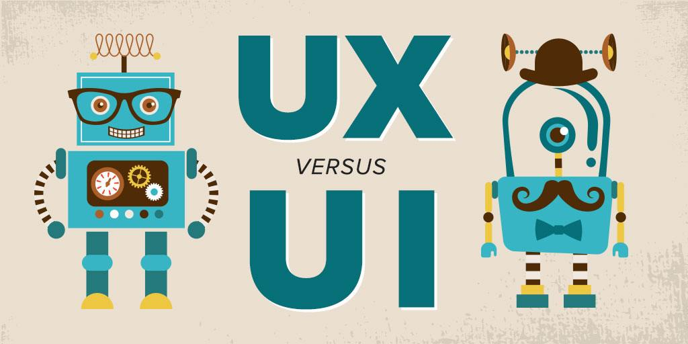

Fundamentos Diseño Web y el Lenguage "markup"
Texto tomado de wikipedia El diseño web implica conocer cómo se deben utilizar cada uno de los elementos permitidos en el HTML, es decir, hacer un uso correcto de este lenguaje dentro de los estándares establecidos por la W3C y en lo referente a la web semántica. Debido a la permisibilidad de algunos navegadores web como Internet Explorer, esta premisa original se ha perdido. Por ejemplo, este navegador permite que no sea necesario cerrar las etiquetas del marcado, utiliza código propietario, etc. Esto impide que ese documento web sea universal e independiente del medio que se utilice para ser mostrado.
La web semántica, por otra parte, aboga por un uso lógico de los elementos según el significado para el que fueron concebidas. Por ejemplo se utilizará el elemento <p> para marcar párrafos, y <table> para tabular datos (nunca para disponer de manera visual los diferentes elementos del documento). En su última instancia, esto ha supuesto una auténtica revolución en el diseño web puesto que apuesta por separar totalmente el contenido del documento de la visualización.
De esta forma se utiliza el documento HTML únicamente para contener, organizar y estructurar la información y las hojas de estilo CSS para indicar como se mostrará dicha información en los diferentes medios (como por ejemplo, una monitor de computadora, un teléfono móvil, impreso en papel, leída por un sintetizador de voz, etc.). Por lógica, esta metodología beneficia enormemente la accesibilidad del documento.